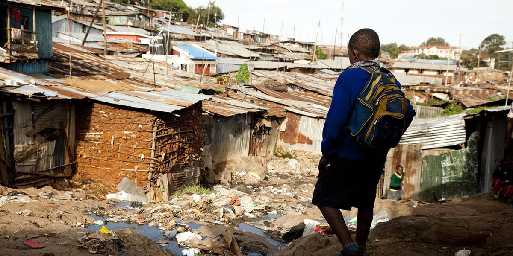

What is World Hunger?
World hunger refers to pockets of the human population who regularly do not get enough food to eat. Which in fact almost 1 in every 15 children in developing countries dies before the age of 5, most of them from hunger-related causes. While hunger exists worldwide, 526 million hungry people live in Asia. Over a quarter of the world's undernourished people live in Sub-Saharan Africa.
This happens because a vast majority of the world's hungry people live in developing countries. The situation is worst in Africa, with almost 21 percent of the population there facing hunger on a daily basis. As a region, Sub-Saharan Africa struggles the most, with nearly one in every four people facing undernourishment.
Why is world hunger a problem?
The impact of world hunger is both destructive and diverse.
Essentially, a diet characterized by insufficient intake of calories,
proteins, vitamins, and minerals, whether in infants, children, or adults,
hinders human development at all levels. In turn, this will have a negative
impact on the health, education, economic and social development of entire
communities around the world.
Hunger is not just about eating enough food, but about having enough nutritious food.
Malnutrition is attributable to 45% of deaths among children under five,
while one sixth of children in developing countries are underweight.
Micronutrient deficiency also affects a large part of the world's population.
Micronutrient deficiency is a shortage of vitamins and minerals necessary for human health.
This is sometimes called "hidden hunger" because there may be no obvious,
obvious signs of malnutrition. Iron deficiency in women of childbearing age is a major example of micronutrient deficiency.
What's the cause?
1."Poverty" is the main cause of global hunger.
The uneven income distribution and lack of resources in developing countries means that
millions of people simply cannot afford the land or crops they need to grow, otherwise they will
not have access to nutritious food. This is also a periodic problem-if you are constantly hungry,
your energy will decrease and your mental and physical performance will decrease,
which in turn will make it difficult for you to work or study. This then leads to persistent poverty
and persistent hunger.

2."Climate variability" and extremes are becoming the main forces behind world hunger. Since the early 1990s, the number of climate-related disasters (drought, famine, floods, severe heat) has doubled.
Rising temperatures and the transfer of rainfall have adverse effects on crops and livestock, which in turn have a significant impact on food security and nutrition. In particular, drought accounts for more than 80% of total agricultural losses.

3."Economic slowdown".
Even in a peaceful environment, the slowdown in global economic growth in recent years has led to worsening food insecurity. From import capacity and food access to commodity prices and social protection program subsidies, rising costs and reduced spending have negatively impacted people's self-sufficiency in many countries.
What can be done to help
Studies show that the more developed a country becomes, the larger the income gap grows. We can see from these numbers that a country’s economic growth does not guarantee that its citizens will be lifted out of poverty. What needs to be solved is the inequality that develops.
What are the solutions being proposed to solve the problem of poverty around the world?
1.Bring education to the extremely poor to enable them to have better jobs.
2.Give them Health Care to improve their physical conditions and make them more competitive.
3.Use the budget allocated for War and Weapons to stop Global Hunger.
4.Governments should invest in programs and projects that will be beneficial to improving the lives of the poor – to open opportunities for them to lift themselves out of poverty. More schools, better sanitation, a cleaner environment and more income opportunities.
5.Give people living without electricity access to renewable energy.
6.Reducing poverty is doable. Now more than ever, we have the technology.